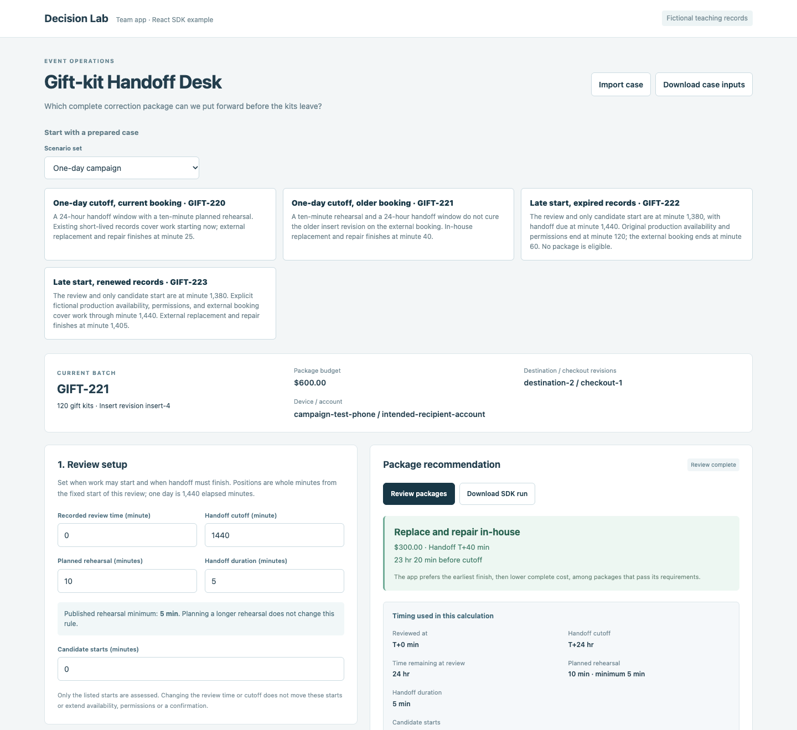
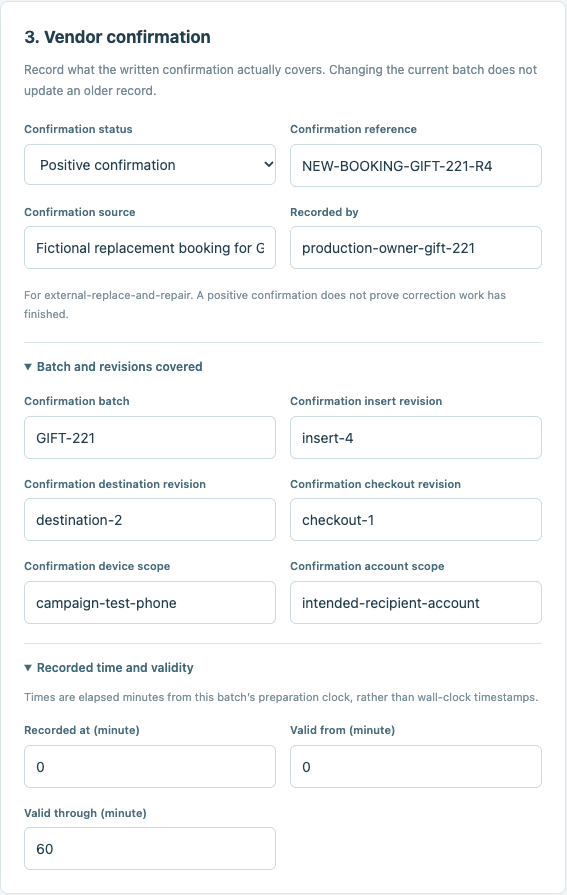
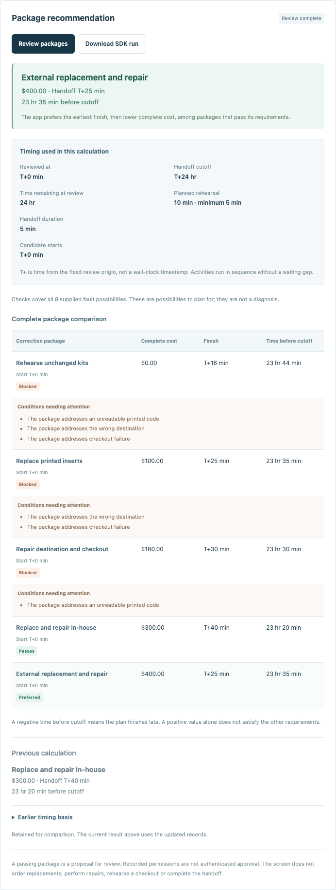
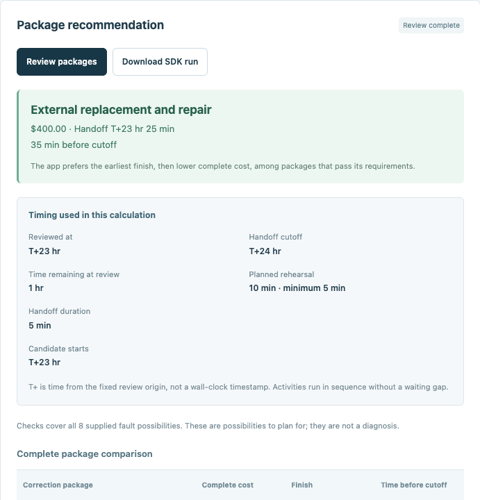

Leah has found a campaign worth a closer look. GIFT-221 has a supported in-house correction for its 120 kits: $300, with handoff at T+40 min. Marketing would prefer the earlier external package, and its $400 quote still fits the $600 budget. The blocker is the booking: the inserts are now revision 4, but the confirmation still names revision 3.
Taylor, the campaign owner, obtains a current confirmation. Leah needs to record it, reassess the complete package and show why the proposal changed. She also needs to see whether the records still hold if production starts later in the day.
This continues the CLI campaign preflight in a Gift-kit Handoff Desk: a focused React application using the Decision Lab SDK. It uses the same pinned app and native case inputs as the batch review. The people, bookings and outcomes are fictional.
Bring the flagged case into the desk.
The preflight report’s Download case for the React desk link gives Leah the complete canonical case behind GIFT-221. In the desk, Import case loads that file, retaining its fault possibilities, quotes, timing, resources, permissions and old confirmation.
function importCaseText(text) {
interrupt();
setIssues([]);
setStatus('dirty');
try {
// Native raw inputs and pinned SDK case artifacts use the same admission
// path. No restoration of archived runs or custom review bundles.
installCase(labRef.current.sources.parseArtifact(text), '');The import uses SDK case admission and validation against the fixed app. It transfers the recorded inputs, rather than an accepted approval or restored recommendation. Leah selects Review packages to calculate a current result.
The desk also provides the same prepared inputs under Scenario set → One-day campaign. Selecting a worked case loads its form without automatically evaluating it. For this walkthrough, the file comes from the actual CLI report.
- Leah and TaylorInspect the same case.Review the campaign’s timing, package comparison and the confirmation’s old revision.
- React desk and SDKRecord and reassess.Apply the newly supplied record and calculate complete packages under the same rules.
- Responsible ownersReview the handoff.Inspect the supporting records, authorize the work and perform the correction and rehearsal.
The initial SDK result agrees with the CLI: in-house replacement and repair is preferred at $300, finishing T+40 min. The external package remains blocked by its older insert scope.


Keep positions, durations and requirements separate.
Review setup makes the case’s timing editable. The one-day inputs use a fixed origin and a cutoff at minute 1,440. Opening the screen does not start a fresh day or turn its recorded review time into a live clock.
| Field | GIFT-221 input | Meaning |
|---|---|---|
| Recorded review time | 0 | T+0: the position at which this review assesses the work. |
| Handoff cutoff | 1,440 | T+24 hr: the position by which complete handoff must finish. |
| Candidate starts | 0 | The proposed start to assess. More explicit candidates can be supplied. |
| Planned rehearsal | 10 | A ten-minute duration after correction. |
| Handoff duration | 5 | A five-minute duration after rehearsal. |
The form maps those values into the native case before evaluation:
const result = structuredClone(base);
for (const field of setupFields) {
result.parameters[field] = read(`setup.${field}`, draft.setup?.[field], whole);
}
result.parameters.startOptions = read('setup.startOptions', draft.setup?.startOptions, starts);The published rehearsal minimum is displayed separately, read from the pinned app. It remains five minutes. Planning ten minutes already satisfies it; making ten minutes mandatory would require an authored rule change.
The earlier authoring article demonstrated that separate ten-minute-minimum adaptation. This SDK example uses the original five-minute minimum with a ten-minute plan. Its external finish is T+25 min: ten minutes of correction, ten of rehearsal and five of handoff.
Record the confirmation that actually covers the campaign.
The external confirmation needs the right batch, insert revision, destination revision, checkout revision, test device and intended account. It also needs its own reference, source, named recorder, recorded time and validity interval.
Leah records the fictional newly issued confirmation covering insert-4, with its replacement reference and source. The remaining campaign scope stays the same. The early work still fits the confirmation’s short validity interval; the one-day cutoff does not extend that interval.


Changing the old record’s revision merely to obtain a better result would not establish a current booking. Here, a separately supplied confirmation is the reason to change the recorded fields. Its existence does not grant operating permission or prove that the external correction has happened.
The desk keeps all eight retained fault configurations. A booking does not resolve uncertainty about whether the printed code, destination or checkout is faulty. The package must still address the supplied possibilities as a complete arrangement of correction, rehearsal and handoff.
Withdraw the current proposal while records change.
An edit immediately marks the desk Needs reassessment. The previous calculation remains visible as a comparison; the current recommendation and current-run download are withheld until a complete new assessment is available.
function edited() {
interrupt();
setStatus('dirty');
setIssues([]);
}The React hook interrupts superseded work. An abort controller and request counter prevent a late result from an older form or another case from replacing the current screen.
When Leah selects Review packages, the event handler prepares the complete inputs, binds them to the app, validates them and requests the SDK assessment and report:
const inputs = buildCase(caseData, draft, config);
const snapshot = lab.cases.create({ app, inputs });
const validation = lab.cases.validate({ app, case: snapshot });
if (!validation.valid) {
setIssues(validation.issues);
setStatus('invalid');
return;
}
const result = await lab.run({
app,
case: snapshot,
execution: { signal: controller.signal, timeoutMs: 15000 },
...(run ? { context: { priorRun: run } } : {}),
reportOptions: { scope: 'all', locale: 'en-US' },
});The hook creates its Decision Lab instance with createDecisionLab({ executor }) and createBrowserExecutor(). React owns the forms, loading and comparison state; the published app and SDK assess feasibility and preference.
With the current confirmation recorded, external replacement and repair becomes preferred at $400, finishing T+25 min. In-house work still passes at $300, finishing T+40 min. The app’s earliest-handoff priority prefers the external option: fifteen minutes earlier for an additional $100.


The screen reads those calculated findings through the public SDK assessment helper:
// This public resolver restores a retained native assessment from its report.
// Consumers do not need to decode the SDK's normalized table representation.
let assessment;
try { assessment = commitment.resolveCommitmentAssessment(run.assessment, run.report); }
catch { return unavailable('The complete package assessment is unavailable in this result.'); }
if (assessment.status !== 'complete' || assessment.coverage.complete !== true
|| assessment.coverage.admissionComplete !== true) {
return unavailable('The calculation has not checked every admitted package and fault scenario.');
}It checks completeness, preserves preferred ties and formats the packages’ costs, start positions, finishes, slack and failed conditions. The team’s business labels do not introduce a separate preference rule.
A day-long window does not make early records valid all day.
Leah can also change the recorded review time and candidate starts. At T+23 hr, a T+24 hr cutoff leaves one hour. There is time for a 25-minute external package, but the old production shift, permission and confirmation may already have ended.
The native one-day examples make that distinction explicit:
| Case | Recorded support | Finding |
|---|---|---|
| GIFT-222 | Production availability and permissions ended at T+2 hr; the external confirmation ended at T+1 hr. | No listed package passes, even though some calculated finishes fall before cutoff. |
| GIFT-223 | Separately supplied permissions, independently allocated production availability and a positive confirmation cover T+23 hr through T+24 hr. | External work preferred at $400, finishing T+23 hr 25 min, with 35 min before cutoff. |


Availability and permissions exposes editable times on existing production, booking and permission records. Their identity, package, actor, source and configuration scope stay attached. The external confirmation has its own recorded-time and validity fields.
result.tables[table] = base.tables[table].map((original, index) => {
const row = rows[index];
const metadata = value => Object.fromEntries(Object.entries(value ?? {}).filter(([key]) => !fields.includes(key)));
if (!sameValue(metadata(original), metadata(row))) {
issues.push({ path: `availability.${table}.${index}`, message: 'Keep the recorded identity, scope and source unchanged. Import another case to replace these records.' });
}
return {
...original,
...Object.fromEntries(fields.map(field => [
field, read(`availability.${table}.${index}.${field}`, row?.[field], whole),
])),
};A cutoff edit changes only the cutoff. Entering a later validity interval records a supported change; the software does not obtain that permission or supplier commitment. Adding or removing records, changing permission scope or changing resource capacity requires a complete revised case.
Candidate starts remain explicit. Moving the review time to T+23 hr does not move a candidate still set to T+0. The planner compares the supplied starts and consecutive correction, rehearsal and handoff activities; it does not search every minute or construct an overnight calendar schedule.
Give the team a record it can carry forward.
Download case inputs preserves the current canonical case for another review or CLI assessment. Download SDK run retains the complete native calculation, including its evaluated inputs, assessment and report:
downloadRun() {
if (status === 'complete') download(`${caseData.id}-run.json`, run, labRef.current);
},The current and earlier calculations are comparison state in the React session. The current-run download does not bundle both, and importing a case prepares it for a new review rather than restoring an archived decision. The screen has no automatic browser save.
A complete blocked finding can be retained. Invalid inputs or an incomplete assessment withhold a current recommendation. That difference matters to Leah: “no package passes these requirements” calls for different work from “the inputs or assessment need attention.”
The Gift-kit Handoff Desk repository directory contains the full React application, shared-case copies, pinned app and tests. useGiftReview.js shows the SDK calls; gifting.js contains the form conversions and supported assessment projection. The excerpts link to the exact source revision used here.
Leah can now explain the proposal: the current confirmation supports the earlier external package, its $400 expense fits the budget, and its complete schedule includes the planned ten-minute rehearsal. If work moves later, she can see which recorded intervals must also support that move. The responsible people still approve, perform and verify the work before releasing the kits.